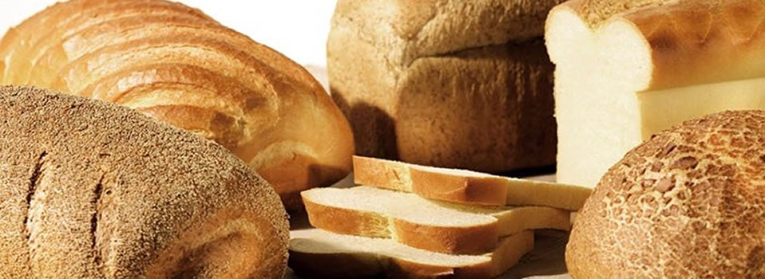
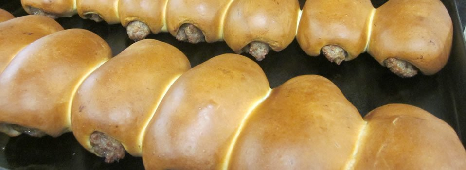
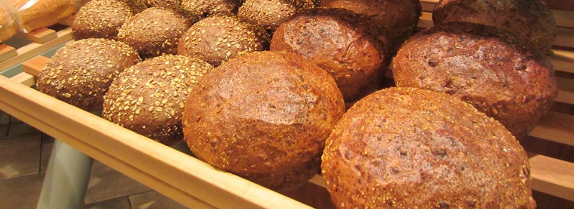
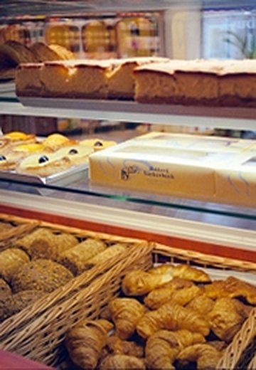
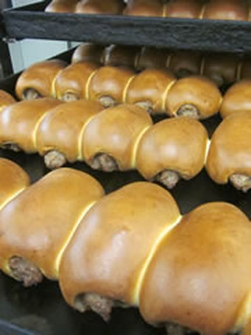
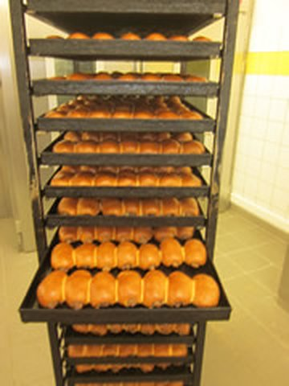
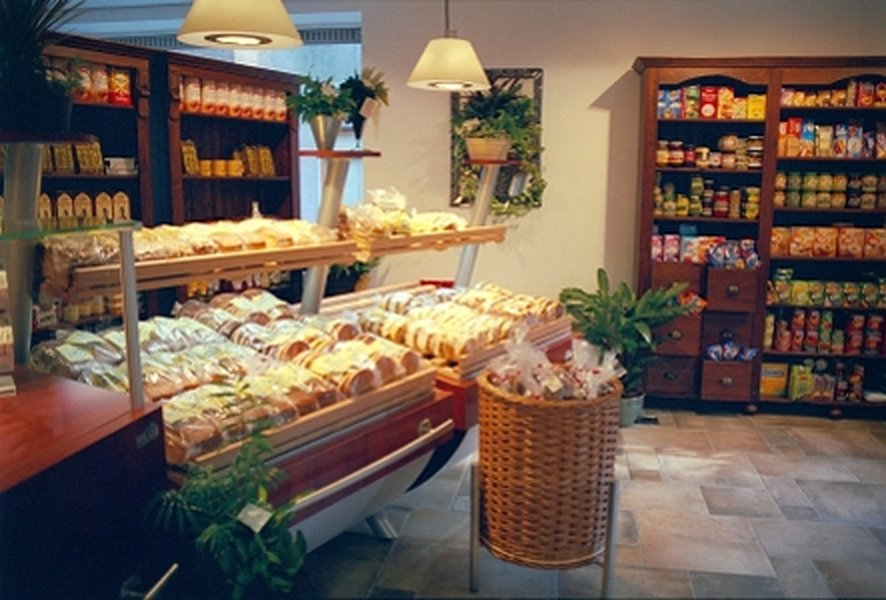

Grootbrood
Wit, bruin en volkoren. Als busbrood, vloerbrood, tijger, casino of rond.
Iedere dag versBekijk alles

Al sinds 1930 de warme bakker van Nispen. Iedere dag ovenvers brood, banket en ons bekende Nispens worstenbroodje, volgens eigen recept.
Alles bakken we zelf, in onze eigen bakkerij achter de winkel. Klik op een soort om alles te zien.

Wit, bruin en volkoren. Als busbrood, vloerbrood, tijger, casino of rond.

Meergranen, zuurdesem, spelt en stokbrood. Ook anijs- en rozijnenbrood.

Cadetjes, puntjes en eierkoeken. Croissants en koffiekoeken voor bij de koffie.

Ons eigen worstenbrood, saucijzenbroodjes, fricandel- en kaasbroodjes.
Iets te vieren? Wij bakken taarten voor 4 tot 90 personen. Bel of mail ons met uw wensen.
Bestellen
Bekend in heel Roosendaal en omstreken. Sinds de oprichting in 1930 maken we 'm volgens hetzelfde geheime recept, met de beste grondstoffen. Het gehakt stellen we zelf samen en kruiden we met de grootste zorg.

In 1930 begon Mon Suykerbuyk sr. de bakkerij in Nispen en bracht hij het brood nog op de fiets rond. Inmiddels staan Mon en Lieve Suykerbuyk aan het roer, en sinds 2012 bakt ook de vierde generatie mee.
Ambacht en moderne ovens gaan bij ons samen. De bakkerij is helemaal vernieuwd en we werken volgens de Hygiënecode voor de Brood- en Banketbakkerij. Wat uit de oven komt, ligt direct in de winkel.
U vindt ons aan de Dorpsstraat in Nispen. Graag tot ziens in de winkel!
Een taart, een schaal worstenbroodjes of uw vaste brood? Bel of mail ons, dan leggen we het voor u klaar.